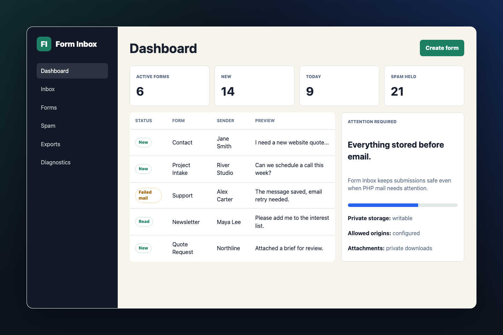

Registered Endpoints
Create named form endpoints like /submit/contact. Public requests cannot choose arbitrary notification recipients.

Script Shed free PHP script
A private, self-hosted form backend for static websites. Point any HTML form at your endpoint and read submissions in your own browser-based inbox.
What It Solves
Form Inbox is made for GitHub Pages, static HTML sites, portfolio sites, landing pages, Jamstack projects, and small-business websites hosted somewhere without server-side form handling. You keep control of the files, settings, submissions, and attachments.
Features
Create named form endpoints like /submit/contact. Public requests cannot choose arbitrary notification recipients.
View, search, filter, archive, mark spam, trash, export, and inspect submissions from a password-protected admin panel.
Submissions are stored as segmented JSON files with locked atomic writes. No SQL database or installer is required.
Works with ordinary HTML forms, multipart uploads, JavaScript fetch(), and cross-origin submissions from allowed origins.
Includes public tokens, origin checks, honeypot fields, timing checks, duplicate suppression, rate limiting, and transparent spam scoring.
Email is attempted after the submission is saved. If PHP mail fails, the message remains safely stored in the inbox.
Best For
GitHub Pages contact forms
Static portfolio inquiries
Small-business quote requests
Jamstack landing pages
Event or club signups
Simple file-upload forms
Install
storage-private outside the public web root when your host allows it.
config.php.
Example
Use a normal form action, a public form token, and the honeypot field generated for that endpoint.
<form action="https://forms.example.com/submit/contact" method="post">
<input type="hidden" name="_form_token" value="PUBLIC_FORM_TOKEN">
<label>Email <input type="email" name="email" required></label>
<label>Message <textarea name="message" required></textarea></label>
<input type="text" name="_website" tabindex="-1" autocomplete="off">
<button type="submit">Send</button>
</form>FAQ
No. It stores configuration, submissions, indexes, backups, and rate-limit records in JSON files.
Yes. Host Form Inbox on a PHP-capable server, then point your GitHub Pages form action at the generated endpoint.
No. It appears in page HTML, so it is not treated as a password. Security comes from registered forms, server-side validation, allowed origins, rate limits, honeypots, and attachment checks.
The submission is saved first. The admin dashboard shows failed notifications so you can still read the message and retry the email.
Yes, when you enable attachments for a form. Files are stored privately, renamed internally, validated, and downloaded through the admin panel.
Free Download
MIT licensed, self-hosted, and built for ordinary PHP hosting. No account, service, build process, or database required.
Download ZIPAfter setup, delete the password helper and keep private storage outside the public web root when possible.